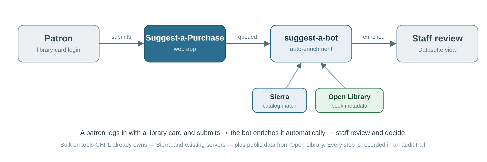
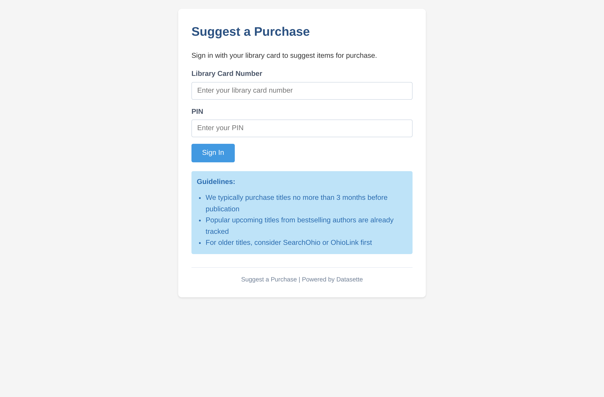
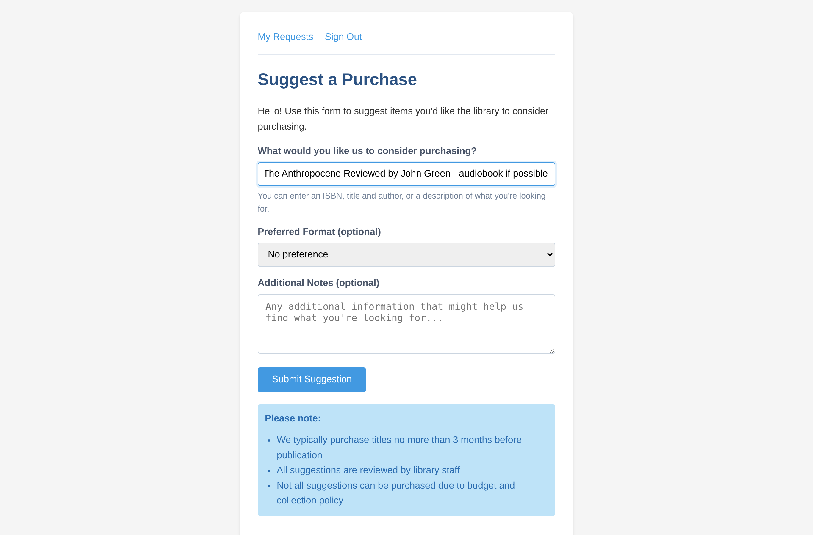
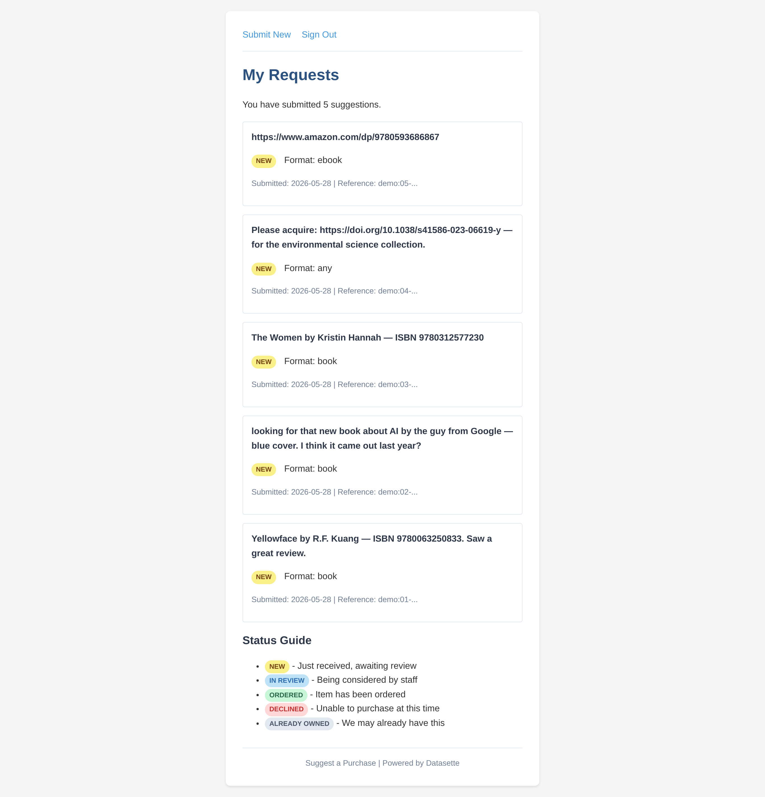
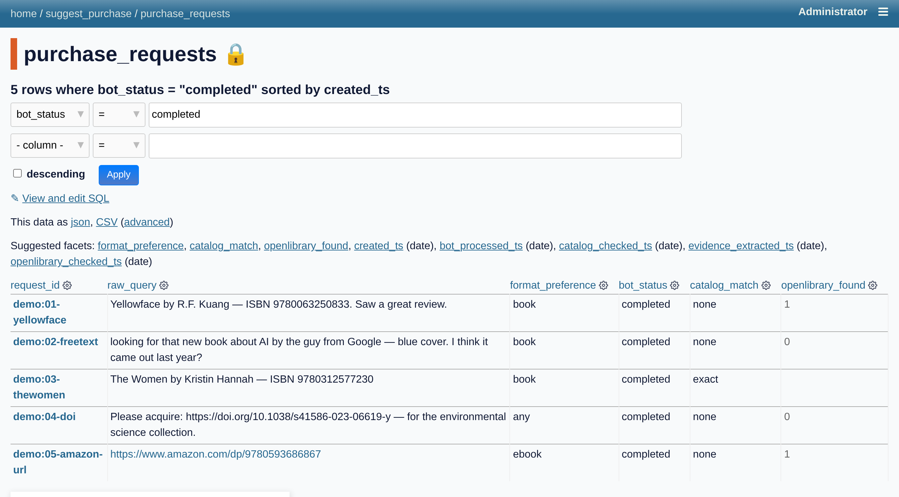
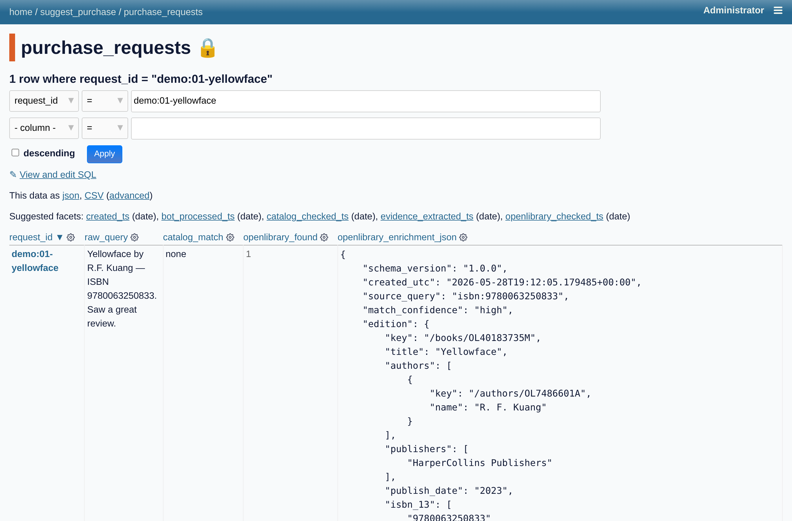
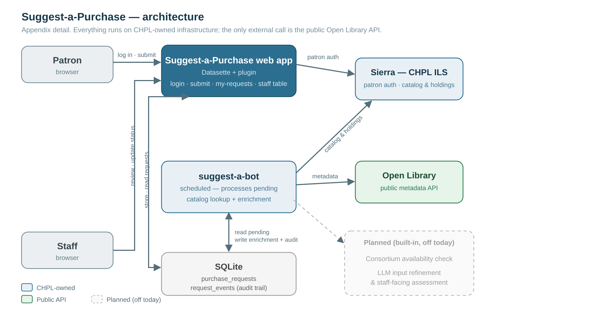

Ray Voelker
Cincinnati & Hamilton County Public Library
ray.voelker@chpl.org
A customer recommends something for the collection.

Built entirely on tools CHPL already owns — Sierra, existing servers, public APIs.
The live app — ↓ to walk the flow if needed.
Live app · 2-minute recording embedded as the safety net

library card login

plain-language request — no forms

your suggestions + status

a bot-enriched queue in Datasette

matched & enriched from Open Library
Built in-house, in weeks — and built to last:
The capability is the story — not just this one app.
The real goal: less friction between a customer and the item they want.
Same Sierra integration. Same Datasette pattern. Same audit trail.
The capability compounds. That’s the story.
Built with — open tools, public data:
↓ data sources & directions explored
Q&A backup — ↓ for screenshots.

Full architecture · ↓ My Requests · staff queue · enrichment
what the customer sees after submitting
completed & bot-enriched, in Datasette
matched edition + metadata (JSON)
Questions, ideas, or CHPL-specific tools you'd want built next?
Ray Voelker
ray.voelker@chpl.org